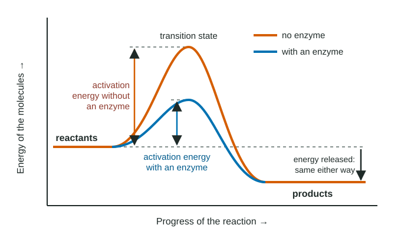

Enzyme Catalysis
Every reaction has an activation energy: the energy reactants must absorb to reach the unstable transition state before becoming products.
Part 1 · Hook
Why this matters
Pour hydrogen peroxide on a cut and it foams. On a clean countertop it just sits there. Both are the same reaction, hydrogen peroxide breaking down into water and oxygen gas, and on the counter it runs so slowly you cannot see it. In the cut, an enzyme called catalase, released from damaged cells, makes it run millions of times faster. The enzyme does not add energy or change the products. It lowers the hill the molecules have to climb.
Part 2 · Before you start
What this builds on
Part 3 · Prerequisite check
Quick check before you start
1. What determines which molecule an enzyme acts on?
- The match between the molecule and the active site in shape and in charge or polarity
- The size of the molecule: any molecule small enough to enter the active site is acted on
- The number of atoms in the molecule, since enzymes act on molecules with the same atom count
Show the answer
Specificity comes from the active site: its shape and its pattern of charged, polar and nonpolar side chains must match the substrate.
- Correct: The match between the molecule and the active site in shape and in charge or polarity:
- The size of the molecule: any molecule small enough to enter the active site is acted on:
- The number of atoms in the molecule, since enzymes act on molecules with the same atom count:
2. In the reaction 2 H₂O₂ → 2 H₂O + O₂, which molecules are the reactants?
- Water and oxygen
- Hydrogen peroxide
- Hydrogen peroxide and oxygen
Show the answer
Reactants are on the left of the arrow and are used up; products are on the right and are formed. Here hydrogen peroxide is the reactant; water and oxygen are the products.
- Water and oxygen:
- Correct: Hydrogen peroxide:
- Hydrogen peroxide and oxygen:
3. Water molecules in a warm beaker move faster on average than those in a cold beaker. Which form of energy is higher in the warm beaker?
- Kinetic energy, the energy of motion
- Potential energy stored in covalent bonds
- Chemical energy released by breaking hydrogen bonds
Show the answer
Temperature measures the average kinetic energy of the molecules: warmer means faster-moving molecules.
- Correct: Kinetic energy, the energy of motion:
- Potential energy stored in covalent bonds:
- Chemical energy released by breaking hydrogen bonds:
Part 4 · See it
See it first

Part 5 · Step by step
How it works, step by step
- Before reactants can become products, some of their existing bonds must be stretched or partly broken.The molecules must first absorb energy and pass through an unstable, high-energy arrangement: the transition state. The energy needed to get there is the activation energy.
- At body temperature, only a tiny fraction of molecules move fast enough to reach the transition state when they bump into each other.Without a catalyst, many reactions that release energy still run extremely slowly.
- An enzyme binds its substrate in the active site and holds it in a strained position, in the right orientation, next to charged or polar side chains.The transition state is easier to reach: the activation energy is lower.
- With a lower activation energy, a much larger fraction of substrate molecules can react at the same temperature.The reaction rate rises, often by millions of times.
- The enzyme does not change the energy of the reactants or of the products.The same products form and the same amount of energy is released or absorbed; the reaction just happens faster.
- After the products are released, the enzyme has its original structure.It binds another substrate: enzymes are not used up, so a little enzyme processes a lot of substrate.
Part 6 · Key ideas
Key ideas
- Activation energy is the hill between reactants and products. A reaction can release energy overall and still be slow if its hill is high.
- Enzymes speed reactions by lowering the activation energy. They do not add energy, change the products, or change how much energy the reaction releases.
- Heat and enzymes both speed reactions, but differently: heat gives more molecules enough energy to clear the same hill, while an enzyme lowers the hill.
- Reaction rate is product formed (or substrate used) per unit time. On a graph of product against time it is the slope; the steepest part, at the start, is the initial rate.
Part 7 · Misconception
A common mistake
The wrong idea: An enzyme gives the substrate the extra energy it needs to react, so the reaction releases more energy with the enzyme than without it.
What actually happens: An enzyme adds no energy. It lowers the energy needed to reach the transition state. The reactants and products have the same energy with or without it, so the energy released is the same.
Part 8 · Check yourself
Check yourself
Exam-style questions. Anything you miss goes into your review queue.
Graph
Energy diagram for one reaction
The graph shows the energy of the reacting molecules as a reaction proceeds from reactants (left) to products (right), with and without the enzyme that catalyzes it. Reaction progress has no units.
Without enzymeWith enzyme
Data table
| Reaction progress | Without enzyme | With enzyme |
|---|---|---|
| 0 | 40 | 40 |
| 1 | 40 | 40 |
| 2 | 42 | 41 |
| 3 | 70 | 52 |
| 4 | 102 | 65 |
| 5 | 115 | 70 |
| 6 | 102 | 65 |
| 7 | 60 | 42 |
| 8 | 18 | 17 |
| 9 | 15 | 15 |
| 10 | 15 | 15 |
1. What is the activation energy of the reaction without the enzyme, in kJ/mol?
Type a number in kJ/mol.
Show the answer
Activation energy = peak energy − energy of the reactants = 115 − 40 = 75 kJ/mol.
- Answer: 75 kJ/mol
2. By what percentage does the enzyme lower the activation energy? Give a whole number.
Type a number in %.
Show the answer
Without the enzyme: 115 − 40 = 75 kJ/mol. With it: 70 − 40 = 30 kJ/mol. Percent decrease = (75 − 30) ÷ 75 × 100 = 60%.
- Answer: 60 %
3. Based on the graph, how does the enzyme change the reaction?
- It lowers the peak but leaves the reactant and product levels alone, so 25 kJ/mol is released either way.
- It lowers the energy of the products, so the reaction releases more energy when the enzyme is present.
- It raises the energy of the reactants so they start closer to the peak and need less energy to react.
- It lowers both the energy peak and the product level by the same amount, so the energy released by the reaction is unchanged.
Show the answer
Both curves start at 40 and end at 15 kJ/mol; only the peak differs (115 against 70). The energy released, 40 − 15 = 25 kJ/mol, is the same.
- Correct: It lowers the peak but leaves the reactant and product levels alone, so 25 kJ/mol is released either way.: Same start, same end, lower peak: that is what an enzyme does.
- It lowers the energy of the products, so the reaction releases more energy when the enzyme is present.: Both curves end at 15 kJ/mol, so the products have the same energy with or without the enzyme.
- It raises the energy of the reactants so they start closer to the peak and need less energy to react.: Both curves start at 40 kJ/mol; the enzyme does not change the reactants' energy.
- It lowers both the energy peak and the product level by the same amount, so the energy released by the reaction is unchanged.: The product level is 15 kJ/mol on both curves; only the peak moves.
4. The same reaction can also run backward, from products to reactants. Using the graph, how does the enzyme affect the backward reaction?
- It lowers its activation energy from 100 to 55 kJ/mol, so the enzyme speeds the backward reaction too.
- It has no effect on it, because an enzyme's active site binds just the reactants of the forward reaction and not the products.
- It lowers its activation energy from 75 to 30 kJ/mol, the same values as for the forward reaction.
- It raises its activation energy, which is why the enzyme makes the reaction run in the forward direction.
Show the answer
Going backward, the molecules start at the product level (15) and climb to the same peak: 115 − 15 = 100 kJ/mol without the enzyme, 70 − 15 = 55 with it. The enzyme lowers both barriers by 45 kJ/mol, so it speeds both directions.
- Correct: It lowers its activation energy from 100 to 55 kJ/mol, so the enzyme speeds the backward reaction too.: The peak is shared by both directions, so lowering it lowers both barriers by the same 45 kJ/mol.
- It has no effect on it, because an enzyme's active site binds just the reactants of the forward reaction and not the products.: The backward reaction passes through the same transition state, which the enzyme stabilizes; the graph shows the lower peak serves both directions.
- It lowers its activation energy from 75 to 30 kJ/mol, the same values as for the forward reaction.: Those values are measured from the reactant level (40); the backward reaction starts at the product level (15).
- It raises its activation energy, which is why the enzyme makes the reaction run in the forward direction.: The peak is lower with the enzyme, so the climb from the products is smaller, not larger.
5. Breaking sucrose into glucose and fructose releases energy, yet a bowl of table sugar stays sucrose for years. Which explanation is best?
- Its activation energy is high, so at room temperature almost no sucrose reaches the transition state.
- The reaction absorbs energy overall, so it happens just when energy is supplied from outside.
- Sucrose is a product of this reaction, not a reactant, so the reaction is unable to start.
- The glucose and fructose re-form sucrose as fast as it breaks, so the amount of sucrose looks constant.
Show the answer
Whether a reaction releases energy and how fast it runs are different questions. A high activation energy keeps this reaction extremely slow, even though it releases energy, without a catalyst.
- Correct: Its activation energy is high, so at room temperature almost no sucrose reaches the transition state.: A high barrier makes the reaction slow even though it releases energy overall.
- The reaction absorbs energy overall, so it happens just when energy is supplied from outside.: The stem says the reaction releases energy; what stops it is the barrier, not the overall energy change.
- Sucrose is a product of this reaction, not a reactant, so the reaction is unable to start.: Sucrose is the reactant here; it is broken into glucose and fructose.
- The glucose and fructose re-form sucrose as fast as it breaks, so the amount of sucrose looks constant.: No glucose or fructose is forming in the bowl in measurable amounts, so there is nothing to re-form sucrose.
6. A student measures the product of an enzyme reaction every minute: 0, 12, 22, 29, 33 and 35 µmol at 0, 1, 2, 3, 4 and 5 minutes. Which statement best describes the reaction rate?
- It is highest in the first minute (12 µmol/min) and falls as substrate is used up.
- It is constant at 7 µmol/min, the total product divided by the total time.
- It rises each minute, because the amount of product goes up each minute.
- It is highest in the last minute, when the most product is present in the tube.
Show the answer
Product added per minute: 12, 10, 7, 4, 2 µmol. The rate, the slope, is steepest at the start and falls as the remaining substrate drops.
- Correct: It is highest in the first minute (12 µmol/min) and falls as substrate is used up.: The per-minute gains fall from 12 to 2 µmol, so the rate is highest at first.
- It is constant at 7 µmol/min, the total product divided by the total time.: 35 ÷ 5 = 7 is the average rate; the actual rate changes from 12 down to 2 µmol/min.
- It rises each minute, because the amount of product goes up each minute.: The amount of product rises, but the amount added each minute (the rate) falls.
- It is highest in the last minute, when the most product is present in the tube.: The last minute added only 2 µmol, the smallest gain; rate is the change per minute, not the total.
7. An enzyme is added to a tube in which a slow reaction that releases energy is running at 25 °C. Predict the change in each variable.
| Variable | Change |
|---|---|
| Activation energy of the reaction | — |
| Energy released per mole of reactant that reacts | — |
| Time needed to make 1 mmol of product | — |
| Amount of enzyme in the tube after 1 hour | — |
Show the answer
An enzyme lowers the activation energy and so raises the rate. It changes neither the energy released nor its own amount.
- Activation energy of the reaction: decreases. The enzyme's active site makes the transition state easier to reach, lowering the barrier.
- Energy released per mole of reactant that reacts: no change. The reactants and products have the same energy with or without the enzyme, so the energy released is unchanged.
- Time needed to make 1 mmol of product: decreases. A lower barrier means more molecules react per second, so the same amount of product forms sooner.
- Amount of enzyme in the tube after 1 hour: no change. Enzymes are not used up; after releasing the products each enzyme molecule has its original structure.
Part 9 · Summary
Summary
Every reaction has an activation energy: the energy reactants must absorb to reach the unstable transition state before becoming products. Enzymes lower the activation energy by holding the substrate in the active site in a strained, well-oriented position next to helpful side chains. More molecules can then react at the same temperature, so the reaction rate, measured as product made or substrate used per unit time, rises. The enzyme does not change the reactants, the products or the energy released, and it comes out unchanged, so it is used again and again.
Part 10 · Up next
What comes next
Part 11 · Connections